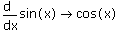

Besides doing numerical calculations, Mathcad can also perform operations on symbolic expressions - expressions that contain variables or mathematical symbols - and return the results in symbolic form.
Here are some examples:
2x + 5x → 7·x

Notice that these expressions are evaluated using the symbolic equal sign→, rather than the numerical equal sign =. To insert the symbolic equal sign, press [Ctrl] [.]. You can evaluate all of the standard Mathcad operators and many built-in functions symbolically.
There are several reasons why you might want to evaluate an expression symbolically:
Unlike the numerical equal sign, the symbolic equal sign doesn't require you to assign values to the variables in an expression before evaluating it.
Symbolic results can reveal relationships among variables that might not be apparent from numerical results.
Symbolic calculations are immune to the round-off errors that are inherent in numerical calculations.
There are two ways to perform symbolic operations on an expression:
Evaluate it using the symbolic equal sign. This is the recommended because the results are "live": if you later make a change to the worksheet anywhere above the expression or to the left of it in the same line, Mathcad updates the result automatically. To perform specific symbolic operations, such as factoring or expanding the expression, you can insert keywords before the symbolic equal sign.
Use the Symbolics menu commands. The results are static, one-time calculations that ignore all previously defined variables and functions. These results do not display the symbolic equals sign or keywords.
Mathcad treats units as undefined variable names in symbolic calculations. It does not combine units of the same quantity unless they are the same unit, that is,
m + m → 2m, but
m + cm → m + cm.
If you pass an expression with units to a symbolic function that expects only numbers, Mathcad returns an error.